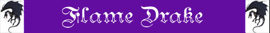

Lingua di Fiamme;
Voracità Inferiore;
Resistenza Superiore al Fuoco e Calore;

|
|
Ambiente/Habitat | Colline e Montagne |
| Frequenza | Rara | |
| Organizzazione | Solitario o Gruppo | |
| Periodo di Attività | Giorno | |
| Dieta | Carnivora | |
| Intelligenza | Low intelligence (5) | |
| Punti Combattimento | 9 Punti Combattimento | |
| Tesoro | Vedi Sotto | |
| Allineamento Dominante | Neutrale | |
| Numero di Apparizione | 1 (3d2 nella tana) | |
| Classe Armatura | 3 [10 base, 6 corazza, 1 destrezza] | |
| Movimento | 7 esagoni, volando 9 esagoni | |
| Dadi Vita | 6 (+ 6 punti ferita) | |
| Thac0 | Thac0 14 | |
| Numero di Attacchi | Morso | |
| Danni | 1d10+2 (taglio) | |
| Poteri Offensivi |
Istinto Predatorio; Lingua di Fiamme; Voracità Inferiore; |
|
| Poteri Difensivi |
Robustezza
Superiore
(+ 6 punti ferita); Resistenza Superiore al Fuoco e Calore; |
|
| Poteri Generici | Nessuno; | |
| Vulnerabilità | Nessuna; | |
| Resistenza alla Magia | 10% | |
| Sensi | Oscurovisione, Sensi Superiori | |
| Dimensioni | Large (3 m. di lunghezza) | |
| Morale | Elite (13) | |
| Valore in Punti Esperienza | 996 |
|
TIRI SALVEZZA DELLA CREATURA |
|||||||
| CORAGGIO | ENERGIA VITALE | MAGIA | MALATTIA | MENTE | RIFLESSI | ROBUSTEZZA | VELENO |
| 0 | 0 | 0 | 0 | 0 | 0 | 0 | 0 |
| 45 | 50 | 59 | 44 | 57 | 53 | 47 | 41 |
| BONUS/MALUS SPECIFICI: +5% su effetti derivanti da fuoco o calore | |||||||
Descrizione
I Flame Drakes appartengono alla famiglia dei draghi ma molto più in basso nella scala evolutiva. Si tratta di creature antichissime che da sempre popolano il mondo di Arelia. La loro caratteristica è quella di non essere dotati di zampe anteriori. Le loro zampe posteriori, invece, sono possenti e oltre a permettergli grandi balzi quando spiccano il volo, gli consentono di correre ad una certa velocità anche sul terreno. Le loro scaglie sono di color ambra con riflessi rossicci.
Combat
I Flame Drakes attaccano le loro vittime iniziando solitamente emettendo una lingua di fiamme che sia in grado di colpirne il massimo numero possibile per poi attaccarli con il loro possente morso in attesa che la lingua di fiamme si ricarichi. Solitamente non usano la terza lingua di fiamme se non in casi di particolare gravità o quando sono messi davvero alle strette, preferendo conservarsela per il resto della giornata.
ISTINTO
PREDATORIO
(Moderate Special Ability):
La creatura
possiede un forte istinto predatorio, per tale motivo costei riceve un
bonus costante di
+1
ai suoi tiri per colpire.
LINGUA DI FIAMME
(Superior Special
Ability):
La
creatura può, utilizzando un'azione complessa avente
fattore iniziativa +3,
in luogo di effettuare i suoi attacchi, sputare una lingua di fuoco larga circa
2 metri e lunga fino a 12 metri che coinvolge
4 esagoni
in linea retta nella direzione prescelta dalla creatura. Deve osservarsi che il
getto di fuoco diminuisce di intensità dopo i primi 6 metri di gittata.
La lingua di fuoco, quindi, provocherà a tutte le creature presenti
nei primi 2 esagoni
dell'area d'effetto 2d6+3 danni da fuoco
magico ed a quelli presenti
negli ultimi 2 esagoni
dell'area d'effetto 1d6+4 danni da
fuoco
magico. Tutti i danni possono essere dimezzati superando
un tiro salvezza su riflessi.
Una volta utilizzata questa abilità
la creatura non potrà utilizzarla
nuovamente nei quattro round di combattimento immediatamente successivi.
In ogni caso,
la creatura può utilizzare
questa abilità al massimo tre volte al giorno.
VORACITÀ INFERIORE [MORSO] (Least Special Ability): La creatura è particolarmente vorace e se, nel corso del round di combattimento, è particolarmente rapida può riuscire ad attaccare una seconda volta. In particolare quando questa creatura effettua un tiro per l'iniziativa pari od inferiore a 2 potrà effettuare un attacco multiplo non simultaneo con l'attacco indicato.
ROBUSTEZZA SUPERIORE (Typical Ability): Il fisico di questa creatura è estremamente robusto conferendole una robustezza superiore che le garantisce 6 punti ferita supplementari.
RESISTENZA SUPERIORE AL FUOCO ED AL CALORE (Typical Ability): Il corpo della creatura è particolarmente resistente ai danni da acido, per tale motivo la stessa subirà solo il 50% (per difetto) di tutti i danni da fuoco provocati nei suoi confronti. Questa creatura, inoltre riceve un bonus del +5% a tutti i tiri salvezza dipendenti da effetti di fuoco o di calore.
Habitat/Society
I Flame Drakes cacciano in modo solitario volando alla ricerca delle loro prede ed allontanandosi anche di diversi chilometri dalla loro tana. Una volta trovata una vittima adeguata la afferrano tra le loro possenti fauci e la trasportano volando nella tana dove sono soliti farla cascare più volte da una certa altezza per macerare la sua carne e spezzarne le ossa prima di magiarla. Siccome effettuano tale operazione sempre nello stesso posto (dove si sono rocce reputate da loro adeguate) nei pressi delle loro tane è possibile trovare un ammasso di ossa e pelle su rocce macchiate di sangue raggrumato. La tana di queste creature è, invece, condivisa da un certo numero (da 3 a 6) di esemplari adulti che la difendono congiuntamente. Le tane sono normalmente consistenti in piccoli complessi di caverne di alta quota situate in zone difficilmente accessibili senza volare.
Ecology
I Flame drakes sono al
vertice della catena alimentare. Solo i draghi li cacciano per nutrirsi della
loro prelibata carne. Sono pochi, infatti, i predatori in grado di abbattere
questi cacciatori. La loro pelle è
particolarmente ricercata in quanto con le loro scaglie è possibile produrre
ottime corazze speciali.
Mystical Resource Sourge
(Ghiadola Fuoco) Quantità: 1, Presenza 33% - Effetto Particolare:
Fuoco
o Calore
- Qualità della Risorsa:
Common.
Mystical Resource Sourge
(Cuore) Quantità: 1, Presenza 10% - Scuola di Magia:
Enchantment
- Qualità della Risorsa:
Common
Tesoro (solo nella tana)
I Flame Drakes non accumulano tesoro ma nella loro tana possono trovarsi oggetti di valore posseduti dagli sfortunati che hanno pensato di entrare nella stessa o dalle vittime che sono divenute prede di queste creature. Per tale motivo, se occorre determinare questo tesoro si può utilizzare la seguente tabella:
| % di ritrovamento | TIPOLOGIA | Ammontare Ritrovato |
| 50 % | Gemme | 1d6 |
| 50 % | Oggetti Preziosi | 1d4+1 |
| 80 % | Oggetti Comuni | 1d6 |
| 50 % | Monete di platino | 1d20 |
| 50 % | Monete d'oro | 1d20 |
| 50 % | Monete d'argento | 1d20 |
| 66 % | Armi | 1d3 |
| 50 % | Armature | 1d2 |
| 35% + 30 % + 25 % + 20% | Oggetto magico | 1 1d10: (1-7) common (8-10) rare |